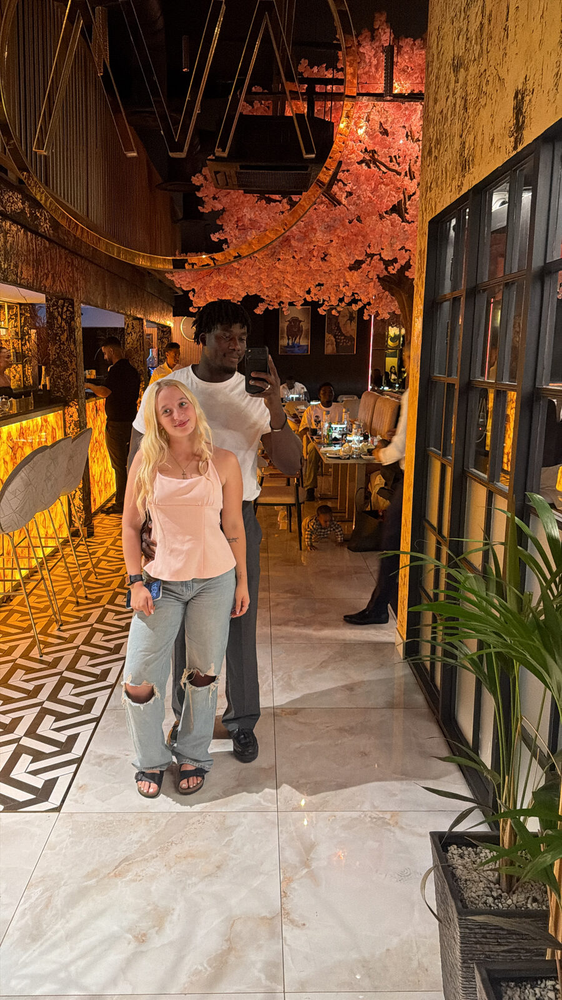
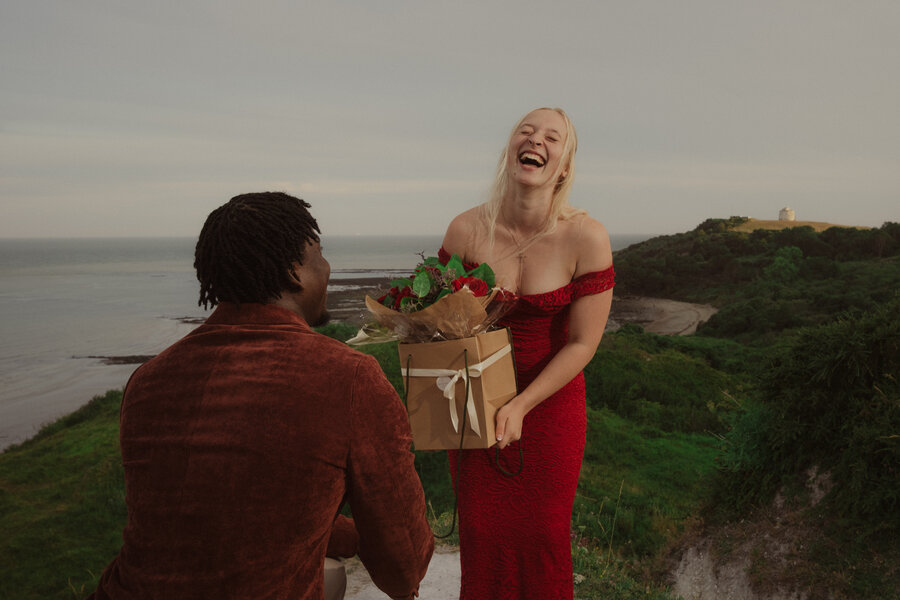
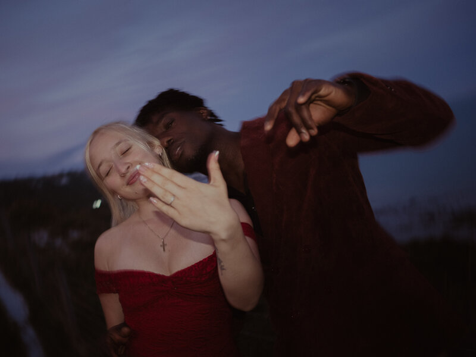
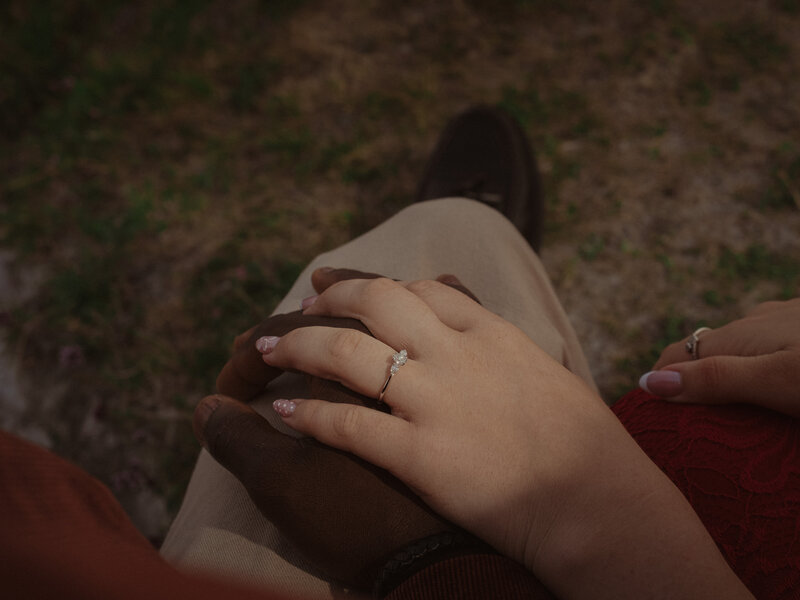
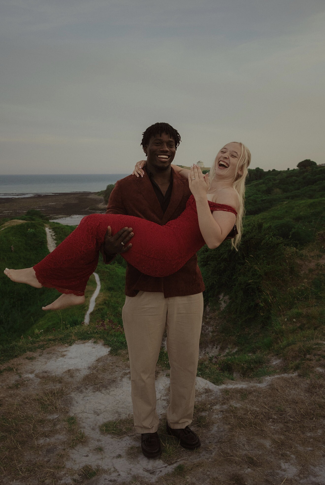

A church, a baptism, and a well-timed DM
Bam noticed Saff at church a couple of months before he ever thought about approaching her. After her baptism in November, something changed — his eyes started noticing her intentionally.
Still, he held back. He wanted to see if she was genuinely going to become part of the church family or if she was simply passing through, so around January he gave himself a little marker and watched to see how consistent she would be.
As the weeks went by, it became clear that Saff wasn't just someone who would breeze in and out — she was actually there to stay and become part of the family. After another couple of weeks of thinking about how he was going to approach her, he finally decided to make his move — through an Instagram DM congratulating her on her baptism. And, as they say, the rest is history.

Darts, Nando's, and a 3–0 humbling
For our first date, we headed to East Station for a game of darts. What was supposed to be a fun little date quickly turned into Saff absolutely humbling Bam with a 3–0 victory.
Of course, Bam maintains that he might have intentionally let her win… but that story has never been independently verified.
After the darts, we headed to Nando's for some food and, most importantly, more time together. It was simple, fun, and a pretty good start to what would become something much bigger.

Our first home date
Somewhere between the darts and the proposal, there were the quiet nights too — just the two of us, at home, in no rush to be anywhere else.
A "photoshoot" that was never really about the photos
The proposal had actually been in the works for weeks. Bam, with the help of his friends CK and Mahesh, came up with the perfect cover story: a fake model photoshoot.
Saff was told about the photoshoot, agreed to it, and had absolutely no idea what was really being planned behind the scenes. For weeks, the plan was carefully put together — making sure the right people were involved, keeping everything secret, and making sure every little detail was in place.
Then, in the week of the proposal, everything nearly fell apart. Saff became unwell and was getting close to cancelling the photoshoot altogether. But despite not feeling her best, she pushed herself to make it happen.
Little did she know, she wasn't just turning up for a photoshoot — she was walking into a moment that had been carefully planned for weeks. And what she thought was going to be an ordinary day in front of the camera became the moment Bam asked her to spend the rest of her life with him.



